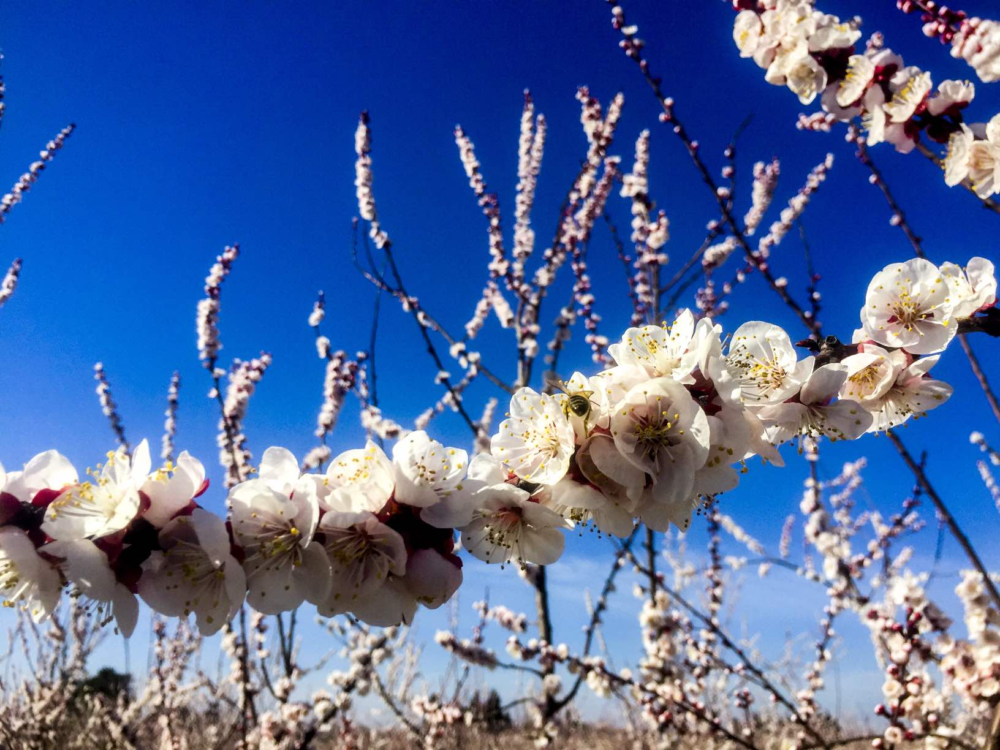
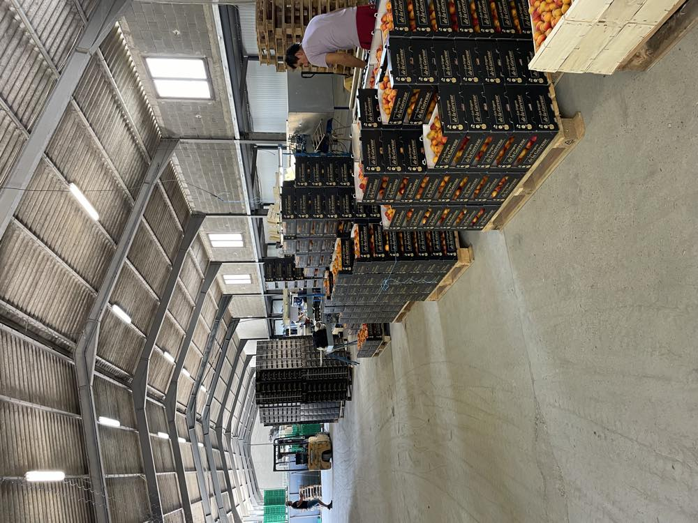
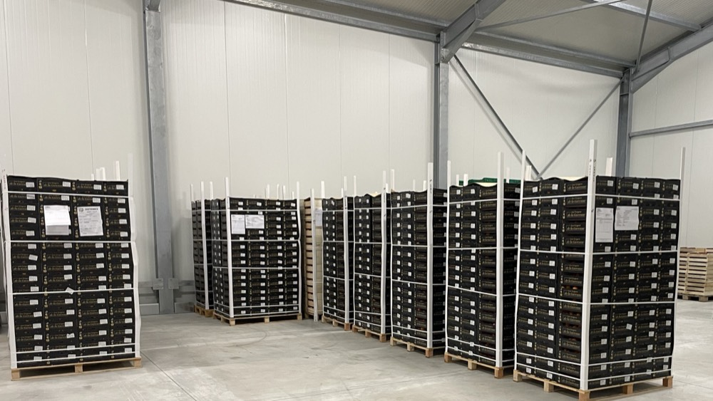
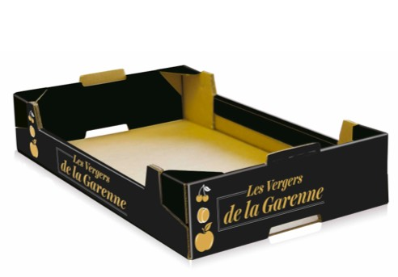
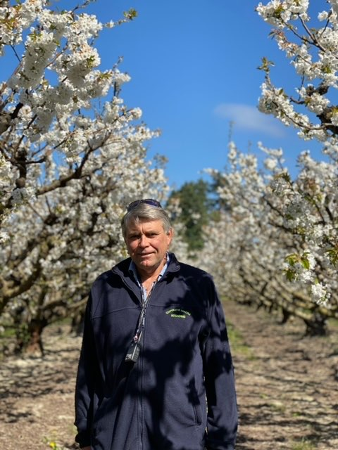
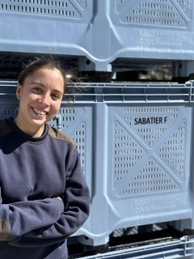

Ghislain Sabatier
Production et vente : abricots, pommes
06 12 10 15 95
Cerises, abricots, pêches, nectarines et pommes, cultivés depuis 1984 par la famille Sabatier à Saint-Pierre-de-Mézoargues.
Dates indicatives, selon la météo de l’année.
Images d’illustration

Nos cueilleurs expérimentés font un premier tri dès la cueillette, pour garantir une qualité supérieure.

Toute l’équipe veille à la qualité et au conditionnement des fruits, dans notre station de Saint-Pierre-de-Mézoargues.

Des chambres froides adaptées garantissent la qualité et la bonne conservation des fruits.

Bois, carton, caisse plastique ou bushel : le conditionnement s’adapte à votre demande, dans toutes les dimensions.

Nous expédions en France et à l’étranger : Allemagne, Angleterre, Benelux, Asie, Proche et Moyen-Orient, Amérique du Sud.
À Saint-Pierre-de-Mézoargues, dans les plaines alluvionnaires du Rhône, les terres sont très fertiles et propices aux vergers. Ghislain Sabatier, issu de la troisième génération d’agriculteurs, s’y installe en 1984. Fanny Sabatier, quatrième génération, devient associée en 2022.


Appelez directement la personne en charge de votre fruit.
Production et vente : abricots, pommes
06 12 10 15 95Vente : cerises, abricots, pêches, nectarines
06 03 76 56 55
Production et station de conditionnement
06 20 61 89 94
Administration
04 90 43 92 82EARL Les Vergers de la Garenne
Quartier la Garenne, Chemin du Rhône (Hangar)
13150 Saint-Pierre-de-Mézoargues, France

Nous accueillons les candidatures spontanées : CV et lettre de motivation.
Nous contacter